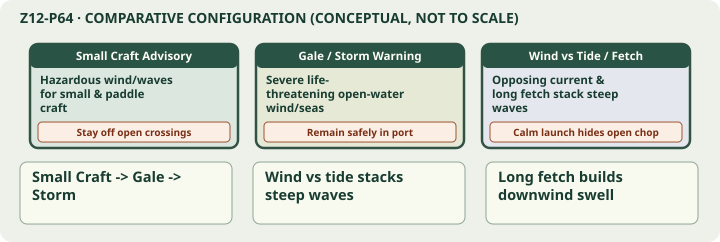

Z12-P64 · Extreme environments · New manuscript
Interpret Small Craft Advisories, Gale Warnings and wind-against-tide wave steepening
Recognize marine wind/wave warning thresholds and dangerous localized sea-state amplification before launching or crossing open water.
When it applies · Great Lakes, large reservoirs, coastal bays, inlets and open marine waters.
Equipment · Official NOAA Marine Zone Forecast, local tide/current tables and sheltered shore bailout chart.

Actions
- Respect official marine warning tiers strictly: **Small Craft Advisories** signal hazardous wind/wave conditions for smaller vessels; **Gale**, **Storm** and **Hazardous Seas Warnings** signal severe life-threatening open-water conditions—stay in port or off the water.[X06, X05]
- Watch for **wind-against-tide / wind-against-current steepening**: when strong wind blows opposite a fast tidal current or river outflow at an inlet bar, waves stack sharply taller, steeper and breaking—capsize danger spikes abruptly even under moderate forecast wind.[X06, X15]
- Account for **fetch** (the uninterrupted distance wind blows across open water)—crossing the downwind side of a large lake exposes craft to far larger waves than the calm sheltered upwind shoreline launch.[X06, E16]
Failure recognition · Launching a canoe from a glassy sheltered upwind bay without realizing 25-knot offshore gusts are building 4-foot whitecaps across the open crossing.[X06, E16]
Verify · Check marine zone advisories, wind direction relative to fetch/tides and sheltered shoreline bailouts before pushing off shore.[X06, X05, ED]
Stop or change course · Active Small Craft Advisories for light paddlecraft, building whitecaps, darkening squall lines or steep breaking inlet bars require staying ashore or landing immediately at the nearest safe lee shore.[X06, E18, X05]
Evidence and editorial notes
- E16 · NWS · Wind Safety (current web edition)
- Section: Wind Safety > High Wind Hazards · Conditions: Forecast or developing high winds, squalls, or straight-line winds
Support: High winds topple trees, loft debris, and stress lightweight shelters beyond fabric and anchor limits; relocate out of timbered fall zones and into substantial shelter before gusts peak.
Limitations: Tents and tarps lack standardized wind-speed survival guarantees across soil types and pitch angles. · Conflicting evidence: None; avoids unvalidated mph ratings for improvised pitches.
Editorial note: Drives high-wind shelter inspection, guying limits, and abandonment thresholds. · Specialist reviewer: Weather safety and shelter equipment
Primary source · checked 2026-11-24 - E18 · NWS · Thunderstorm Safety (current web edition)
- Section: Thunderstorm Safety > Hail, Downbursts, and Flooding · Conditions: Approaching severe thunderstorm with hail, outflow gusts, or heavy rain
Support: Outflow gusts, hail, lightning, and flash runoff can strike before rain arrives at camp; break exposed ridge travel early and secure or vacate lightweight shelters.
Limitations: Storm cells can intensify faster than backcountry foot travel can clear exposed terrain. · Conflicting evidence: None; integrates with E04 and E07.
Editorial note: Connects storm-structure warning cues to early shelter selection. · Specialist reviewer: Weather safety and emergency management
Primary source · checked 2026-11-24 - X05 · US Coast Guard · Boating Safety Resource Center (current web edition)
- Section: Boating Safety > Float Plans, VHF-DSC, Weather and Abandon-Ship Limits · Conditions: Inland large lakes, coastal waters and maritime travel
Support: File a float plan, monitor marine weather and VHF Channel 16/DSC where equipped, stay with a swamped buoyant hull when safer than swimming to distant shore and maintain visual/electronic distress signals.
Limitations: Open-water craft operations require vessel-specific seamanship beyond general survival cards. · Conflicting evidence: None; aligns with NOAA-MARINE and NOAA-SARSAT.
Editorial note: Anchors maritime communication, hull-stay and distress cards in Z12. · Specialist reviewer: Maritime safety and USCG-aligned review
Primary source · checked 2026-11-24 - X06 · NOAA NWS · Marine Weather Services (current web edition)
- Section: Marine Weather Services > Small Craft Advisories, Gale Warnings and Sea State · Conditions: Coastal, Great Lakes and open-water marine zones
Support: Marine forecasts issue Small Craft Advisories, Gale, Storm and Hazardous Seas Warnings; wind opposing tide or shallow shoals steepens breaking waves dramatically faster than inland forecasts indicate.
Limitations: Local fetch and headland funneling can exceed regional zone forecasts. · Conflicting evidence: None; integrates with NOAA-NWR marine channels.
Editorial note: Guides marine weather thresholds and coastal-craft abort cards in Z12. · Specialist reviewer: Marine meteorology and maritime safety
Primary source · checked 2026-11-24 - X15 · NOAA NOS · Tides and Water Levels Education Tutorial (current web edition)
- Section: Tides and Water Levels > Tidal Range, Cutoffs and Currents · Conditions: Ocean coastlines, sea caves, tidal flats and rocky headlands
Support: Tidal cycles raise water levels rapidly along shallow flats, narrow coves and rocky headlands, trapping hikers against cliffs and generating strong reversing currents in inlets; verify local tide tables before entering coastal routes.
Limitations: Wind-driven storm surge and king tides push water well above normal predicted high-tide marks. · Conflicting evidence: None; pairs with NOAA-COAST.
Editorial note: Grounds tidal-cutoff, headland and mudflat planning cards in Z12. · Specialist reviewer: Coastal navigation and marine safety
Primary source · checked 2026-11-24
Source lineage · NOAA Marine Weather Services; new manuscript · Classification · New manuscript.